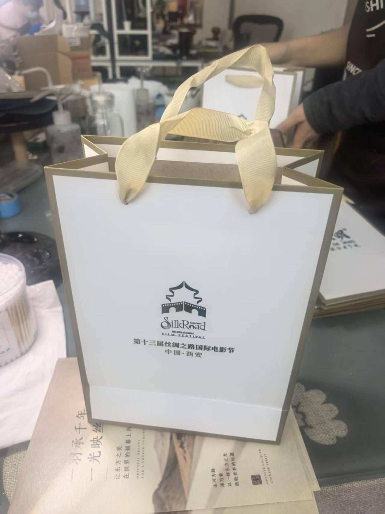
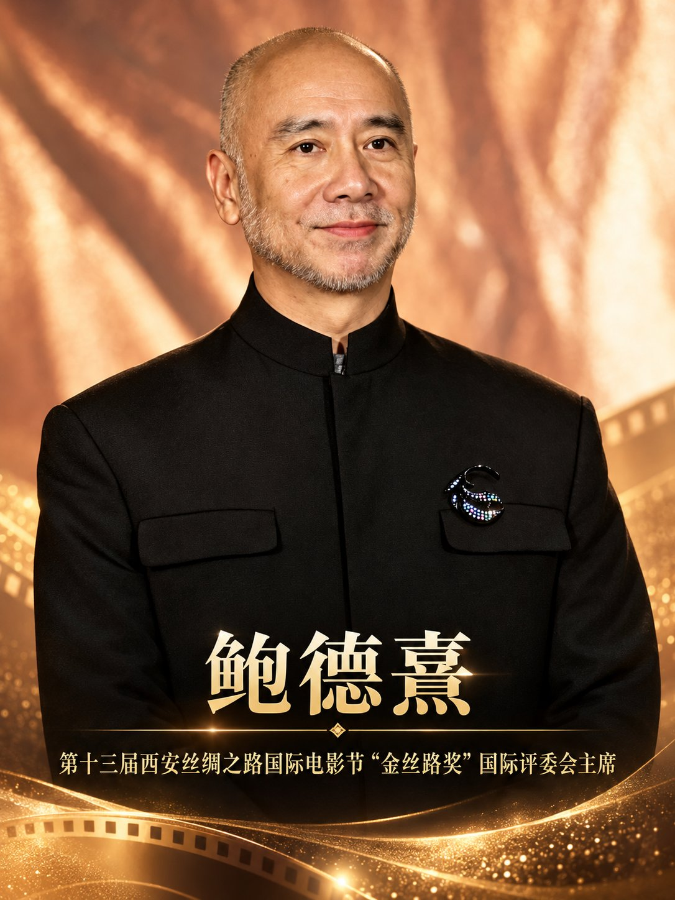
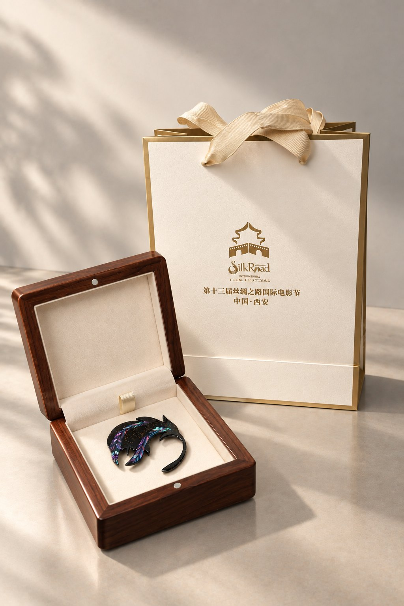
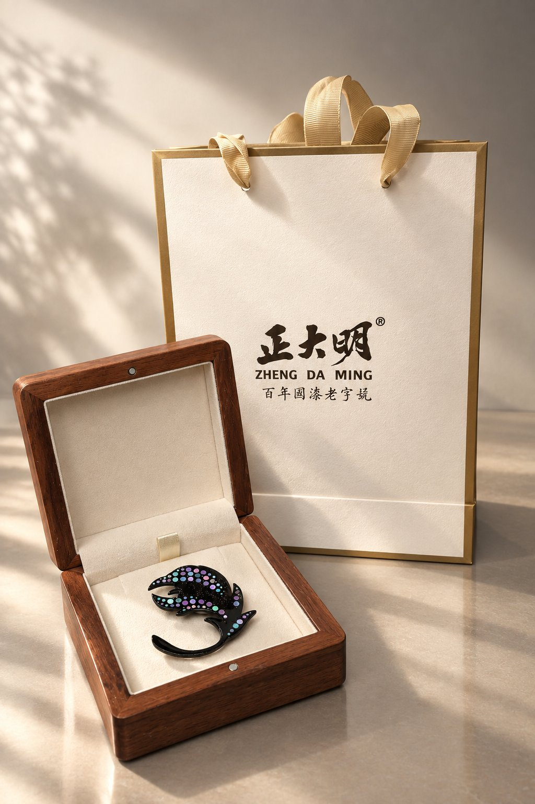

제13회 실크로드 국제영화제가 시안에서 열렸습니다. 정대명은 영화제 지정 공급업체로 선정되어 표칠 작업복과 대칠 예술 브로치 ‘광영사로’를 특별 제작했으며, 천 년의 대칠 공예로 영화제를 빛냈습니다.
2026년 가을, 제13회 실크로드 국제영화제가 시안에서 막을 올렸습니다. 정대명 문화산업그룹은이번 영화제의 지정 공급업체로 깊이 참여하여, 스태프용 표칠 작업복과 대칠 예술 브로치 ‘광영사로(光映丝路)’를 특별히 제작했습니다. 천 년을 이어온 중국의 칠예와 현대 영화 예술이 실크로드의 출발점에서 시공을 넘어 만나는 순간이었습니다.
실크로드 국제영화제는 중국에서 유일하게 ‘실크로드’를 이름에 담은 국제 영화 교류 행사로, 문명 간 상호 학습과 문화 융합이라는 사명을 지니고 있습니다. 정대명의 칠예는 1925년 창업한 백년 칠행에서 비롯되었으며, 친바 산맥의 칠수림 조성에서 생칠 정제, 칠기 제작에 이르기까지 중국 칠의 완전한 산업 사슬을 지켜왔습니다. 이번 영화제 협력을 통해 정대명은 ‘칠’을 언어로 삼아 동양의 기물 미학과 무형문화유산 공예를 국제 문화 플랫폼에 연결하고, 대칠을 전시 케이스에서 더 넓은 무대로 끌어냈습니다.
공식 지정: 정대명, 영화제 지정 공급업체로 선정
제13회 실크로드 국제영화제의 공식 파트너 체계에서 정대명 문화산업그룹은 ‘지정 공급업체’로 선정되어 표칠 작업복과 대칠 예술 브로치 ‘광영사로’를 제공했습니다. 이는 정대명의 제품과 서비스가 영화제 조직위원회의 심사를 통과했으며, 중국 칠예가 국제 영화제의 공급망에 공식적인 자격으로 진입했음을 의미합니다.


표칠 작업복: 한 벌 한 벌이 움직이는 동양의 명함
영화제 기간 동안 정대명이 스태프를 위해 제작한 표칠 작업복은 현장에서 특별한 풍경이 되었습니다. 차분한 검정을 바탕으로 가슴에는 정대명과 영화제 공식 로고를 새기고, 밑단에는 전통 표칠 기법을 적용해 대칠이 액면 위에서 자연스럽게 흐르고 번지고 겹치며 실크로드 같은 은하수 문양을 만들어 냅니다. 표칠은 같은 문양이 두 번 나올 수 없기 때문에, 한 벌마다 표정이 다릅니다. 마치 필름에 새겨진, 다시 재현할 수 없는 한 순간의 빛과 같습니다.


‘광영사로’: 가슴에 담긴 문명의 대화
작업복과 함께 정대명은 영화제 초청 귀빈을 위해 대칠 예술 브로치 ‘광영사로’를 제작했습니다. 뒤돌아보는 봉황이 날개를 펼친 형상을 중심에 두고, 실크로드의 유동적인 이미지와 필름의 빛·그림자 질감을 겹쳐 담았습니다. 문명의 회고, 실크로드의 연장, 빛과 그림자의 융합을 상징하는 디자인입니다. 천연 대칠을 바탕으로 나전 상감과 은분 대칠을 결합하고, 채칠·연칠·칠칠 도포·상감·연마·추광 등 수십 공정을 거쳐 완성됩니다. 한 점마다 음방에서의 건조를 여러 차례 반복해야 하며, 짧게는 수주, 길게는 수개월이 걸립니다.
영화제 해외 홍보대사 원쥔후이(文俊輝), 심사위원장 바오더시(鮑德熹), 그리고 ‘금사로상’ 남우주연상 수상자 이반 사보프가 이 브로치를 착용하고 공식 포스터에 등장하면서, 작은 브로치는 중국 무형문화유산과 세계 영화를 잇는 정교한 상징이 되었습니다.





칠림에서 영화제 현장까지, 완전한 산업 사슬의 힘
이처럼 격조 높은 국제 행사의 특별 제작을 맡을 수 있는 것은 칠수 조성에서 생칠 정제까지, 칠기 연구개발에서 문화창작 파생상품까지 아우르는 정대명의 통합 역량 덕분입니다. 그룹은 산시 안캉, 후베이 언스, 충칭 청커우, 산시 상뤄, 후베이 주시 등에 5,000무(약 333헥타르) 이상의 칠수 기지를 두고 있습니다. 자체 칠림, 자체 공방, 자체 장인 체계를 통해 모든 특별 제작품에서 원료 추적, 공정 관리, 품질 보증을 실현합니다.
이번 영화제와의 협력은 단순한 브랜드 노출의 기회가 아니라, ‘중국의 칠이 시대에 의해 다시 보이게 한다’는 정대명의 이념을 실천한 것입니다. 앞으로도 정대명은 산업화의 방식으로 기술을 지키고, 시장화의 언어로 전통을 이야기할 것입니다.